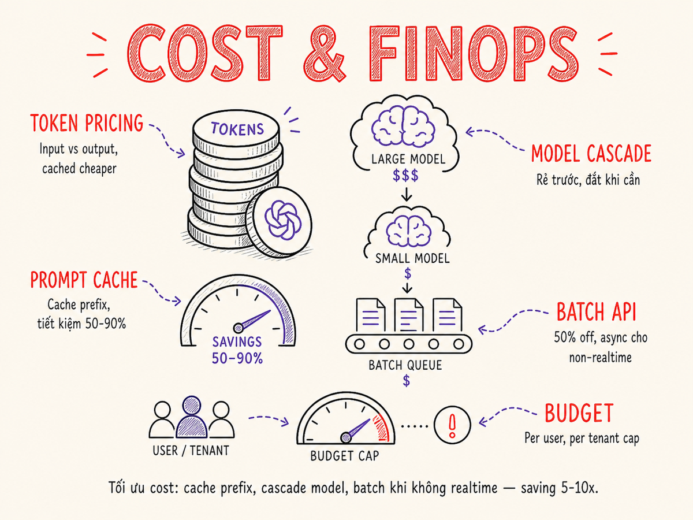

Cost & FinOps cho AI
Token economics, prompt caching, model cascading, batch API — hiểu và kiểm soát chi phí AI là kỹ năng cốt lõi để build sản phẩm bền vững, không chỉ build demo.

20.1 Token Economics
Hầu hết LLM API tính phí theo tokens — đơn vị text nhỏ hơn từ, thường khoảng 3–4 ký tự với tiếng Anh (ít hơn với tiếng không Latin). Chi phí chia thành hai loại:
Input Tokens
Tất cả text bạn gửi vào model: system prompt, conversation history, context từ RAG, user message, tool definitions. Thường rẻ hơn output.
Ví dụ: $2.50/M tokens (GPT-4o, tháng 5/2026)
Output Tokens
Text model generate ra. Thường đắt hơn input 3–5x vì model phải autoregressive generate từng token một. Với reasoning models (o3, o4-mini, Claude Opus), thinking tokens ẩn cũng bị tính là output — có thể nhân chi phí thực 3–10×.
Ví dụ: $10.00/M tokens (GPT-4o, tháng 5/2026)
Cached vs Uncached tokens
Nhiều providers có pricing ưu đãi cho cached tokens — phần prompt đã được cache sẵn. Tỉ lệ discount đáng kể:
- Anthropic: Cache write 5-phút = 1.25× base; cache write 1-giờ = 2× base; cache read = 0.1× base (~90% rẻ hơn). Từ tháng 3/2026, default TTL là 5 phút (trước là 1 giờ) — cần khai báo
"ttl": "1h"để dùng extended cache. - OpenAI: Cached input tokens 50% off (tự động khi prompt ≥1024 tokens, prefix phải match chính xác)
- Google Gemini: Context caching explicit — cache read = 10% base input price; charge thêm theo token-hour lưu trữ
- DeepSeek: Cache hit = 10% base input price (từ 26/4/2026)
Batch discount
Hầu hết providers cho phép gửi requests theo batch với giá giảm 50% đổi lấy latency cao hơn (vài phút đến vài giờ thay vì real-time). Rất phù hợp cho offline processing, eval pipelines, data enrichment.
Bảng giá tham khảo (tháng 5/2026)
| Model | Input $/M | Output $/M | Cache read $/M | Batch (−50%) |
|---|---|---|---|---|
| Claude Haiku 4.5 | $1.00 | $5.00 | $0.10 | $0.50 / $2.50 |
| Claude Sonnet 4.6 | $3.00 | $15.00 | $0.30 | $1.50 / $7.50 |
| Claude Opus 4.7 | $5.00 | $25.00 | $0.50 | $2.50 / $12.50 |
| GPT-4o | $2.50 | $10.00 | $1.25 (50% off) | $1.25 / $5.00 |
| o3 (reasoning) | $2.00 | $8.00 ⚠️ | $0.50 | — |
| o4-mini (reasoning) | $0.55 | $2.20 ⚠️ | $0.14 (75% off) | — |
| Gemini 2.5 Pro | $1.25 | $10.00 | $0.125 (10% off) | $0.625 / $5.00 |
| Gemini 2.5 Flash | $0.30 | $2.50 | $0.03 | — |
| Grok 4.3 (xAI) | $1.25 | $2.50 | — | — |
| DeepSeek V3 | $0.14 | $0.28 | $0.014 (10% off) | — |
| DeepSeek R1 (reasoning) | $0.55 | $2.19 ⚠️ | $0.055 | — |
⚠️ Reasoning models: output price áp dụng cho cả thinking tokens ẩn — chi phí thực tế có thể cao hơn 3–10× giá niêm yết. Nguồn: trang pricing chính thức của từng provider, tháng 5/2026.
Pricing LLM thay đổi thường xuyên và khác nhau rất nhiều giữa models/providers. Luôn check trang pricing chính thức của provider trước khi estimate cost cho dự án. Các con số trong tài liệu này chỉ mang tính minh họa.
20.2 Cost Calculation
Để estimate và track cost, cần tính ở nhiều levels:
Per-request cost
# Công thức cơ bản
cost_per_request = (input_tokens / 1_000_000) * input_price_per_million
+ (output_tokens / 1_000_000) * output_price_per_million
# Ví dụ: GPT-4o ($2.50/M in, $10.00/M out — tháng 5/2026)
# prompt 1000 tokens, response 300 tokens
cost = (1000 / 1_000_000) * 2.50 + (300 / 1_000_000) * 10.00
= 0.0025 + 0.003
= $0.0055 per request
# Cảnh báo reasoning models: "thinking tokens" ẩn tính là output
# o3 ($2/$8/M): task 1000 input + 500 visible output + 2000 reasoning tokens ẩn
# actual_cost = (1000*2 + (500+2000)*8) / 1_000_000 = $0.022 — không phải $0.006Per-session cost
Trong conversational AI, mỗi turn append vào history → input tokens tăng dần. Session với 10 turns có thể tốn nhiều hơn 10× single request vì mỗi turn gửi lại toàn bộ history.
# Session cost tăng phi tuyến
Turn 1: 500 input + 200 output
Turn 2: 700 input + 150 output # 500 history + 200 output + 0 user msg
Turn 3: 900 input + 300 output # history tích lũy
# ... context window có thể đầy ở turn 20-30 tùy model và response lengthPer-user và per-feature cost
Để có visibility thực sự về cost, tag mỗi request với:
user_id, feature_name, environment,
tenant_id. Sau đó aggregate để biết feature nào tốn nhất,
user nào dùng nhiều nhất, và environment nào đang over-spend.
20.3 Prompt Caching
Prompt caching là kỹ thuật tiết kiệm cost lớn nhất và dễ implement nhất. Ý tưởng: phần prefix cố định của prompt (system prompt, static context, few-shot examples) được cache trên server của provider. Các request sau chỉ trả tiền cho phần mới.
Thiết kế prompt cho caching tốt
- Đặt phần static lên đầu: system prompt, static context, few-shot examples — phần thay đổi (user message) xuống cuối
- Anthropic: Đánh dấu cache breakpoints bằng
"cache_control": {"type": "ephemeral"}(TTL 5 phút, mặc định từ tháng 3/2026) hoặc{"type": "ephemeral", "ttl": "1h"}(TTL 1 giờ, cache write 2× base — phù hợp agent workflows dài). - OpenAI: Caching tự động với prompts ≥1024 tokens, prefix phải match chính xác — không cần config thêm
- Gemini: Explicit context caching — cache read = 10% base; trả thêm phí lưu trữ theo token-hour
Từ đầu tháng 3/2026, Anthropic đã thay đổi default cache TTL từ 1 giờ xuống 5 phút mà
không thông báo rõ ràng. Nếu bạn có agent workflows dài hoặc sessions kéo dài >5 phút,
hãy khai báo rõ "ttl": "1h" trong cache_control. Cache write 1 giờ
đắt hơn (2× base) nhưng tiết kiệm hơn nhiều so với re-create cache mỗi 5 phút.
Savings math ví dụ
# Scenario: chatbot Claude Sonnet 4.6, system prompt 2000 tokens, 10k requests/ngày
# Without caching (Sonnet 4.6: $3.00/M input):
daily_input_cost = 10_000 * 2000 * $3.00/M = $0.060/ngày
# With caching (Sonnet 4.6, cache read = $0.30/M — 90% off base):
cache_read_cost = 10_000 * 2000 * $0.30/M = $0.006/ngày
savings_on_cached_part = 90%
# Nếu system prompt là 80% total input, overall input savings ~ 72%
# (~$0.043/ngày tiết kiệm, ~$1,300/năm với volume này)
# Extended TTL 1h: cache write = $6.00/M (2× base)
# Dùng khi session > 5 phút để tránh re-create cache tốn kém20.4 Semantic Caching
Prompt caching hoạt động ở token-level: cùng prefix → cache hit. Semantic caching hoạt động ở meaning-level: câu hỏi có ý nghĩa tương tự → trả về cached response.
Cách hoạt động
- Request đến → embed user query thành vector
- Tìm kiếm trong cache store (vector similarity search)
- Nếu similarity ≥ threshold → return cached response
- Nếu không → call LLM, lưu response vào cache với embedding
GPTCache pattern
GPTCache là thư viện open-source implement semantic caching cho LLM calls. Cấu hình:
from gptcache import cache
from gptcache.adapter import openai
# Setup cache với similarity threshold
cache.init(
similarity_evaluation=SearchDistanceEvaluation(),
data_manager=get_data_manager("map")
)
cache.set_openai_key()
# Sau đó dùng như bình thường — cache tự động
response = openai.ChatCompletion.create(
model="gpt-3.5-turbo",
messages=[{"role": "user", "content": "What is Python?"}]
)Semantic cache không phù hợp khi: responses cần up-to-date (news, stock prices), user-specific data (responses personalized), hoặc khi false cache hit (trả lời sai câu hỏi) nghiêm trọng hơn gọi thêm API. Tune threshold cẩn thận.
20.5 Model Routing / Cascading
Không phải mọi request đều cần model đắt nhất. Model cascading: dùng model rẻ trước, chỉ escalate lên model đắt khi cần thiết.
Với o3, o4-mini, Claude Opus 4.7 (extended thinking), DeepSeek R1 — model sinh ra
thinking tokens ẩn trước khi trả response. Những tokens này không hiển thị
trong output nhưng bị tính là output tokens (giá đắt nhất). Một task o3 đơn giản
với 1000 input + 500 visible output có thể tốn thêm 2000–5000 reasoning tokens ẩn →
chi phí thực tế cao hơn 3–10× so với ước tính từ giá niêm yết. Luôn kiểm tra
usage.completion_tokens_details.reasoning_tokens (OpenAI) hoặc
usage.cache_creation_input_tokens (Anthropic) để debug chi phí thực.
Routing strategies
- Rule-based routing: Đơn giản nhất — dựa trên input length, keywords, feature type. Ví dụ: requests ngắn dưới 100 tokens → small model.
- Classifier-based routing: Train hoặc prompt một small model để classify complexity, sau đó route. RouteLLM (open-source) cung cấp sẵn router.
- Confidence-based: Small model generate xong, check confidence/quality, nếu thấp thì escalate.
- Task-type routing: Code generation → code-specialized model, summarization → general model, customer-facing → safest model.
20.6 Token Budgeting
Context window của LLM không phải vô hạn — và ngay cả khi có long-context model, nhiều tokens hơn = nhiều tiền hơn + latency cao hơn. Token budgeting là các kỹ thuật kiểm soát lượng tokens tiêu thụ.
max_tokens
Luôn set max_tokens (hoặc max_completion_tokens) phù hợp với
use case. Đừng để mặc định — nếu response thực tế chỉ cần 200 tokens mà bạn để max_tokens=4096,
bạn không trả tiền cho phần không dùng, nhưng latency bị ảnh hưởng bởi context pressure.
Sliding window memory
Thay vì giữ toàn bộ conversation history, chỉ giữ N turns gần nhất:
function buildContext(messages, maxTokens = 4000) {
const recent = []
let tokenCount = 0
// Thêm messages từ cuối vào, cho đến khi đủ budget
for (const msg of [...messages].reverse()) {
const est = estimateTokens(msg.content)
if (tokenCount + est > maxTokens) break
recent.unshift(msg)
tokenCount += est
}
return recent
}Summary memory
Khi conversation dài, thay vì drop messages cũ, tóm tắt chúng: "Trước đó user đã nói về X, Y, Z. Kết luận là A." Tóm tắt tiêu thụ ít tokens hơn nhiều so với full history, nhưng giữ được context quan trọng.
20.7 Batch API cho Non-Realtime
Batch API cho phép submit nhiều requests cùng lúc, provider xử lý async (thường trong 24 giờ) và trả về kết quả. Đổi lại, giá giảm 50%.
| Provider | Discount | Max turnaround | Max requests/batch |
|---|---|---|---|
| Anthropic | 50% off | 24 giờ | 10,000 requests |
| OpenAI | 50% off | 24 giờ | 50,000 requests |
| Google Gemini | 50% off | 24 giờ | Varies by tier |
Use cases phù hợp với Batch API
- Eval pipelines: Chạy test cases không cần real-time — tiết kiệm 50% eval cost
- Data enrichment: Classify, label, hoặc extract từ large datasets
- Offline report generation: Tạo summaries, analyses theo batch đêm
- Training data generation: Tạo synthetic examples cho fine-tuning
- SEO/content generation: Tạo product descriptions, metadata không cần real-time
Trong batch requests, nếu tất cả requests có cùng system prompt, prompt caching vẫn hoạt động — tiết kiệm thêm 45–90% trên phần cached, cộng 50% từ batch discount. Kết hợp lại có thể giảm 75–95% cost so với uncached real-time.
20.8 Cost Monitoring & Alerting
Không có visibility về cost, bạn sẽ chỉ biết mình overspend khi nhận hóa đơn cuối tháng. Setup monitoring từ sớm.
Metrics cần track
cost_per_request— trung bình và percentile (p50, p95, p99)cost_per_feature— biết feature nào tốn nhấtcost_per_user— phát hiện power users và abusecost_per_tenant(multi-tenant) — đảm bảo fair billingcache_hit_rate— nếu thấp, điều chỉnh prompt structuredaily/monthly_spendvs budget
Budget enforcement
- Per-environment budget: Dev môi trường có hard limit thấp hơn production
- Per-user rate limiting: Max X requests/phút hoặc $Y/tháng per user
- Per-tenant quota: Mỗi tenant có allocation, UI hiển thị usage
- Alerting: Alert khi cost daily > $X, hoặc tốc độ tăng bất thường
FinOps tools cho AI (2026)
- Langfuse (open-source): LLM observability, trace mọi LLM call, tự tính cost từ token count và model pricing — phổ biến nhất trong cộng đồng
- AI Vyuh FinOps: Purpose-built — track LLM spend theo feature, team, cost center; hỗ trợ OpenAI + Anthropic
- Amnic: FinOps platform có native AI token tracking trên Amazon Bedrock, attribute token usage đến team và user
- Vantage: Cloud cost observability với AI token cost visibility, tie LLM spend to business metrics
- FinOps Foundation — AI Working Group: Framework chuẩn hóa cho cost attribution AI workloads (GPU + API) — tham khảo finops.org
# Ví dụ: track cost với metadata trong request
response = client.messages.create(
model="claude-sonnet-4-6",
messages=messages,
# Lưu metadata cho tracking
metadata={
"user_id": user_id,
"feature": "chat",
"tenant_id": tenant_id,
"env": "production"
}
)
# Track sau khi nhận response
track_cost(
input_tokens=response.usage.input_tokens,
output_tokens=response.usage.output_tokens,
cache_creation_tokens=response.usage.cache_creation_input_tokens,
cache_read_tokens=response.usage.cache_read_input_tokens,
metadata=metadata
)20.9 Cost vs Quality Trade-off Framework
Cost optimization không bao giờ là absolute — luôn là trade-off với quality và latency. Framework để ra quyết định:
| Optimization | Cost impact | Quality impact | Latency impact |
|---|---|---|---|
| Prompt caching | −50–90% | Không đổi | Giảm nhẹ |
| Batch API | −50% | Không đổi | +giờ/ngày |
| Switch sang model nhỏ hơn | −70–95% | Giảm vừa–nhiều | Giảm nhiều |
| Model cascading | −30–60% | Gần không đổi | +nhỏ (overhead) |
| Giảm max_tokens | −nhỏ | Có thể truncate | Giảm nhẹ |
| Semantic caching | −20–80% | Rủi ro false hit | Giảm nhiều (cache hit) |
| Shorter prompts | −10–30% | Có thể giảm | Giảm nhẹ |
1. Prompt caching trước — không đổi quality, tiết kiệm lớn. 2. Batch API cho offline workflows. 3. Model cascading cho features có nhiều request types. 4. Switch model nhỏ hơn CHỈ SAU KHI eval confirms quality đủ tốt cho use case.
20.10 Negotiating với Vendors
Khi spend đủ lớn (~$5k–10k/tháng+), có thể bắt đầu negotiate với providers:
Enterprise pricing
- Volume discount: Spend nhiều → giảm giá per token
- Committed spend: Cam kết $X/năm đổi lấy giá thấp hơn và dedicated capacity
- Private deployment: Một số providers cho phép deploy model trong cloud của bạn
- Rate limit tăng: Enterprise tier thường có rate limits cao hơn
- SLA tốt hơn: Uptime guarantees, support priority
Multi-vendor strategy
Đừng lock-in hoàn toàn vào một provider. Giữ code abstract với interface chung (OpenAI-compatible API, LiteLLM layer) để có thể switch khi cần. Điều này cũng tăng leverage khi negotiate.
20.11 Self-Host Break-Even Analysis
Khi nào tự host model (inference server trên GPU) rẻ hơn dùng API? Đây là phân tích break-even đơn giản:
Chi phí self-host
- GPU cost: Cloud GPU (A100, H100) ~$2–5/giờ, on-premise ~$20k–150k mua
- Engineering time: Setup, maintain, optimize inference server
- Downtime risk: Không có managed SLA
- Model quality gap: Open-source models thường kém hơn frontier models
Khi self-host có lợi
- Volume cực lớn (hàng triệu requests/ngày) với model cỡ 7B–70B
- Data không được phép gửi ra ngoài (compliance, on-prem requirement)
- Cần customize sâu (fine-tune liên tục, đặc thù domain)
- Latency requirements rất thấp và predictable
Hầu hết startups và teams nhỏ–vừa không nên self-host frontier-class models. Engineering overhead lớn, và các optimization (caching, batching, routing) thường đủ để giảm cost về mức acceptable. Self-host cân nhắc khi đã exhaust mọi optimization ở API layer và volume thực sự warrant đầu tư infra.
Tóm tắt
- Prompt caching là optimization cao nhất ROI: implement sớm, tiết kiệm 50–90% trên phần cached mà không ảnh hưởng quality.
- Batch API giảm 50% cost cho mọi offline/async workflow — eval, enrichment, report generation.
- Model cascading dùng model rẻ cho simple requests, escalate khi cần — giảm 30–60% mà quality gần không đổi.
- Track cost với metadata từ ngày đầu: per-feature, per-user, per-tenant — không có visibility thì không optimize được.
- Thứ tự optimize: caching → batch → routing → model downgrade → self-host (cuối cùng).
- Cost vs quality là trade-off — luôn validate với eval trước khi sacrifice quality để save cost.